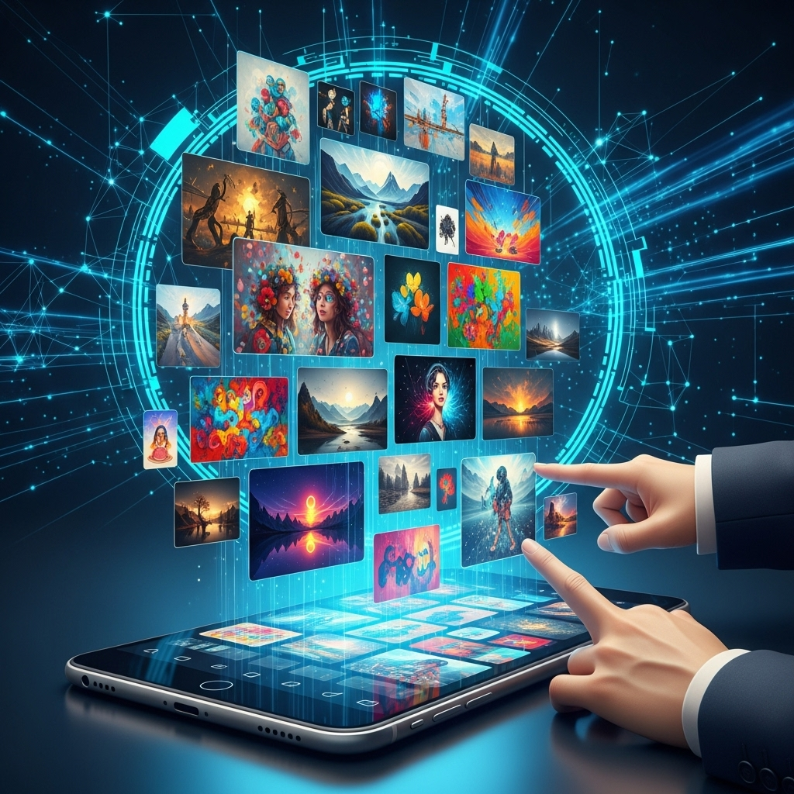
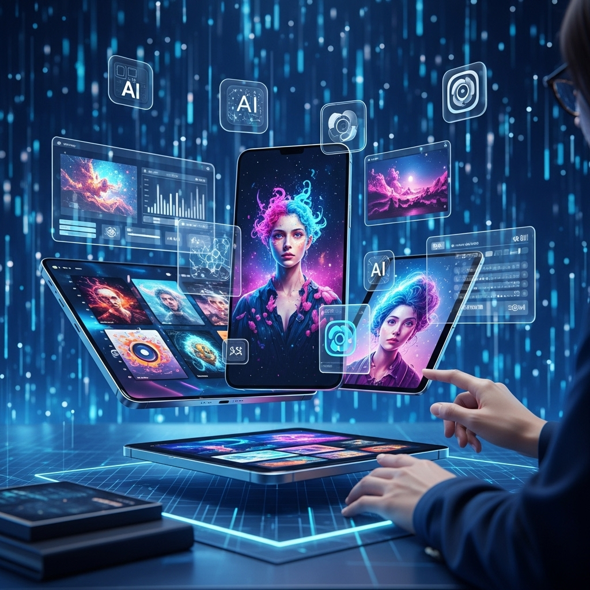
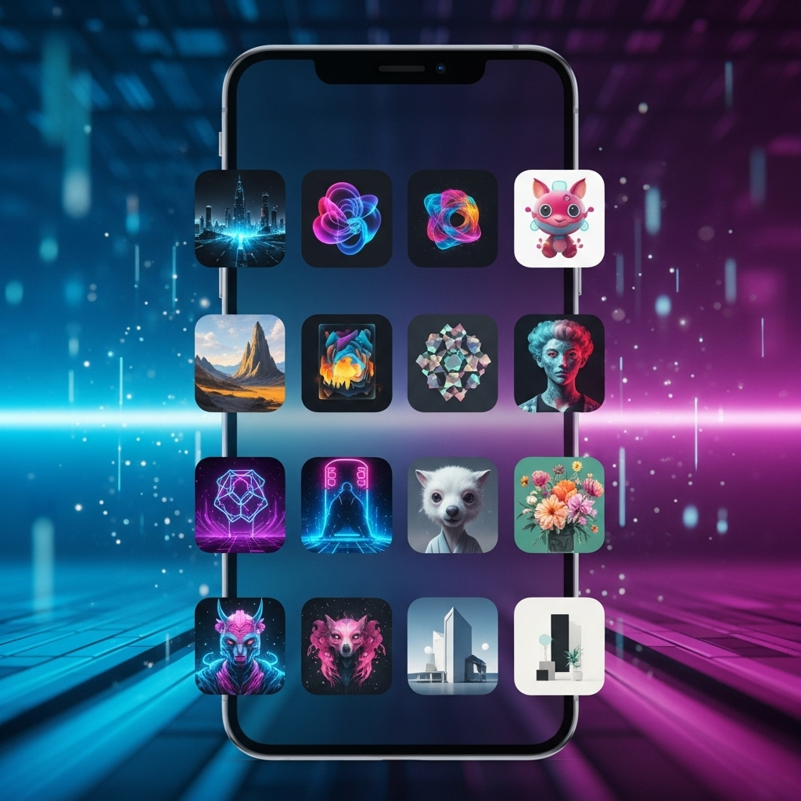
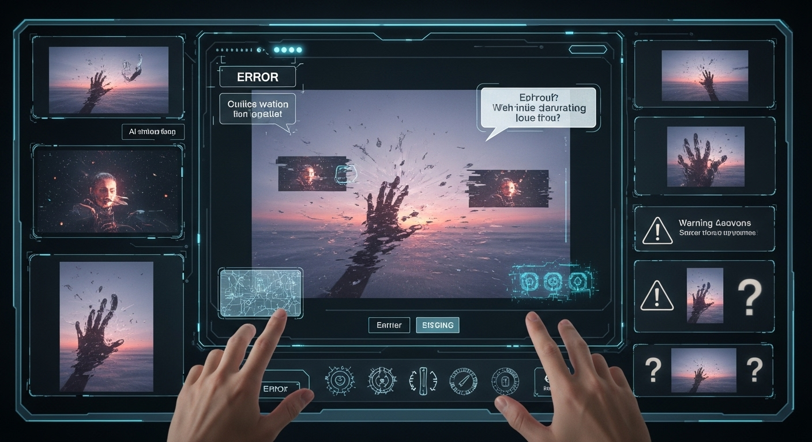

【2024年最新】生成AI画像アプリおすすめ10選！プロが選ぶ活用術と注意点

近年、人工知能（AI）の進化は目覚ましく、私たちの生活や仕事に大きな変化をもたらしています。中でも、テキストから画像を生成する「生成AI画像アプリ」は、クリエイティブ業界に革命を起こしつつある存在として、多くの注目を集めています。Webデザイナーの皆さまも、この新しい技術がもたらす可能性に、少なからず期待と関心を寄せているのではないでしょうか。
かつては専門的なスキルと膨大な時間が必要とされた画像制作が、今やAIの力を借りることで、誰でも手軽に、そして驚くほど高品質な画像を生成できるようになりました。しかし、数多くの生成AI画像アプリが登場する中で、「どれを選べば良いのか」「どう活用すれば、より効果的なのか」「注意すべき点は何か」といった疑問を抱く方も少なくないでしょう。
この記事では、そうした皆さまの疑問にお応えするため、2024年最新のおすすめ生成AI画像アプリを10選ご紹介するとともに、プロのWebデザイナーがどのようにこの技術を活用し、どのような点に注意すべきかを、優しく、そして丁寧に解説していきます。生成AI画像アプリを賢く使いこなし、皆さまのクリエイティブな活動をさらに加速させるためのヒントが、ここにきっと見つかるはずです。さあ、AIが拓く新たなクリエイティブの世界へ、一緒に足を踏み入れてみましょう。
生成AI画像アプリとは？プロが選ぶメリットと活用術

生成AI画像アプリは、私たちのクリエイティブな表現の幅を大きく広げる、まさに「魔法のツール」と言えるでしょう。しかし、その魔法の仕組みや、Webデザイナーとしてどのように活用できるのか、具体的なイメージが湧かない方もいらっしゃるかもしれません。ここでは、生成AI画像アプリの基本から、Webデザイナーが注目する理由、そしてAI画像生成によって解決できるクリエイティブ課題について、深く掘り下げて解説していきます。
生成AI画像アプリの基本機能と仕組み
生成AI画像アプリとは、一言で言えば「テキスト（プロンプト）を入力するだけで、AIがその内容を解釈し、新しい画像を生成するツール」のことです。まるで、頭の中に描いたイメージを言葉にするだけで、目の前に具現化されるかのような体験を提供します。
この驚くべき機能の裏側には、高度なAI技術が隠されています。中心となるのは「深層学習（ディープラーニング）」と呼ばれる機械学習の一分野です。AIは、インターネット上にある膨大な数の画像と、それに付随するテキストデータ（キャプションなど）を学習しています。この学習プロセスを通じて、AIは「どのようなテキストが、どのような画像に対応するのか」という関連性を理解していきます。
具体的には、主に「拡散モデル（Diffusion Model）」や「敵対的生成ネットワーク（GAN: Generative Adversarial Network）」といった技術が用いられています。
- 拡散モデル（Diffusion Model）: これは、近年主流となっている画像生成技術です。まず、ノイズだらけの画像からスタートし、学習したデータに基づいて段階的にノイズを取り除いていくことで、最終的に高品質な画像を生成します。このプロセスは、まるで霧の中から鮮明な像が浮かび上がってくるかのようです。細部の描写や多様なスタイルの生成に優れており、現在の多くの高性能AI画像生成ツールで採用されています。
- 敵対的生成ネットワーク（GAN）: GANは、「生成器（Generator）」と「識別器（Discriminator）」という2つのネットワークが互いに競い合いながら学習を進める仕組みです。生成器は本物そっくりの画像を生成しようとし、識別器はその画像が本物か偽物かを判別しようとします。この「いたちごっこ」のような学習を通じて、生成器はよりリアルな画像を生成できるようになるのです。
これらの技術により、AIは単に既存の画像を組み合わせるだけでなく、これまでに存在しなかった全く新しい画像を「創造」することが可能になります。ユーザーは、プロンプトと呼ばれる短い文章やキーワードを入力することで、生成される画像のテーマ、スタイル、色合い、構図などを細かく指示することができます。例えば、「夕焼けの海辺を歩く犬、水彩画風、温かい光」といった具体的な指示を与えることで、AIはそれに合致する画像を生成してくれるのです。
また、単なるテキストからの生成だけでなく、既存の画像を元にスタイルを変えたり、一部を修正したり、あるいは画像を拡張したりする機能を持つアプリも増えています。これにより、私たちのアイデア次第で、無限とも言える表現の可能性が広がっています。
Webデザイナーが生成AI画像アプリに注目する理由
Webデザイナーにとって、生成AI画像アプリは単なる流行りのツールではなく、日々の業務に革新をもたらす可能性を秘めた、まさに「戦略的なパートナー」となりつつあります。私自身も、そのポテンシャルに大きな魅力を感じ、積極的に活用を試みています。Webデザイナーが生成AI画像アプリに注目する具体的な理由は多岐にわたります。
まず、最も大きな理由の一つは「制作時間の劇的な短縮」です。WebサイトやLP（ランディングページ）を制作する際、イメージに合う素材探しは常に時間と労力を要する作業です。ストックフォトサイトを何時間も探し回ったり、デザイナー自身がイラストを描いたり、カメラマンに撮影を依頼したりと、多くの手間がかかります。しかし、AI画像生成アプリを使えば、必要な画像を数分、あるいは数秒で生成できる可能性があります。これにより、デザインのアイデア出しから実装までのワークフローが大幅にスピードアップし、より多くのプロジェクトを手がけることが可能になります。
次に、「デザインの多様性と表現の幅の拡大」が挙げられます。クライアントの要望やプロジェクトのコンセプトに合わせて、既存のストック素材では見つからないような、ニッチで具体的なイメージが必要になることがよくあります。例えば、「未来的な都市を背景にした、優雅に舞うロボットのイラスト」といった、非常に具体的な指示であっても、AIは様々なバリエーションを提案してくれます。これにより、これまで想像でしか描けなかったようなビジュアルを具現化し、デザインの可能性を無限に広げることができます。
さらに、「コスト削減への貢献」も見逃せません。高品質なストックフォトやイラストは、一枚あたりの購入費用が意外と高額になることがあります。また、プロのイラストレーターやフォトグラファーに依頼するとなると、さらに大きな予算が必要です。AI画像生成アプリの中には、無料または比較的低コストで利用できるものが多く、予算が限られたプロジェクトでも、高品質なビジュアルを諦めることなく制作できるようになります。特にスタートアップや中小企業のWebサイト制作においては、このコストメリットは非常に大きいでしょう。
また、「新しいアイデアの創出とブレインストーミングの加速」にも役立ちます。デザインに行き詰まった時や、クライアントへの提案資料を作成する際、具体的なイメージがなかなか湧かないことがあります。そんな時、AIに漠然としたキーワードを与えて画像を生成させることで、予想もしなかったようなアイデアやインスピレーションを得られることがあります。生成された画像を元に、さらに具体的なプロンプトで微調整を重ねることで、オリジナリティあふれるデザインコンセプトを素早く形にすることが可能です。
最後に、「クライアントワークにおける競争力の強化と差別化」も重要なポイントです。AIを活用して迅速かつ高品質なビジュアルを提案できることは、クライアントからの信頼獲得に繋がり、競合他社との差別化にもなります。例えば、打ち合わせ中にその場で「こんなイメージはいかがでしょうか？」とAI生成画像を提示できれば、クライアントの理解を深め、プロジェクトをスムーズに進めることができるでしょう。
このように、生成AI画像アプリは、Webデザイナーの業務効率化、クリエイティブの質の向上、コスト削減、そして競争力強化という多方面で、計り知れないメリットをもたらすツールとして、今、最も注目すべき存在なのです。
AI画像生成で解決できるクリエイティブ課題
Webデザイナーの皆さんが日々の業務で直面するクリエイティブな課題は多岐にわたります。AI画像生成アプリは、そうした課題の多くに対し、画期的な解決策を提供してくれます。私自身の経験からも、AIがどれほど強力なサポートツールとなり得るかを実感しています。
1. イメージに合うストック素材が見つからない問題
Webサイトのコンセプトやクライアントの要望が具体的であるほど、「ぴったりくる画像」を探すのは至難の業です。既存のストックフォトサイトを何時間も探しても、色味、構図、被写体の表情、背景の雰囲気など、すべてが完璧に合致する一枚を見つけるのは非常に困難です。結果として、妥協して使ったり、イメージに合わないまま進めたりすることもあります。
AIによる解決策: AI画像生成アプリを使えば、詳細なプロンプトを入力することで、頭の中にある具体的なイメージをそのまま形にできます。例えば、「青い光に包まれた未来的なオフィスで、笑顔で働くビジネスパーソンのイラスト、サイバーパンク風」といった、ニッチな要望にも応えられます。これにより、常にオリジナリティとコンセプトに忠実なビジュアル表現が可能になります。
2. 制作時間とコストの制約
特に中小規模のプロジェクトや短納期の案件では、画像制作にかけられる時間や予算が限られていることが少なくありません。プロのカメラマンやイラストレーターに依頼する費用も、決して安価ではありません。
AIによる解決策: AI画像生成は、数秒から数分で複数の画像を生成できます。これにより、素材探しや制作にかかる時間を大幅に短縮し、業務効率を向上させます。また、多くのAIアプリには無料プランや低価格の有料プランがあり、ストックフォトの購入費用や外注費用を削減できるため、コストパフォーマンスに優れています。
3. デザインのバリエーション不足とアイデアの枯渇
同じようなデザインパターンに陥りがちだったり、新しいアイデアがなかなか浮かばなかったりすることもあります。特に、複数のデザイン案を提案する必要がある場合、ゼロからすべてを制作するのは大きな負担です。
AIによる解決策: AIは、一つのプロンプトから多様なスタイルの画像を生成したり、少しプロンプトを変えるだけで全く異なる雰囲気の画像を提案したりできます。これにより、デザインのバリエーションを豊富に用意でき、クライアントへの提案の幅が広がります。また、AIが生成した予期せぬビジュアルから、新たなデザインのインスピレーションを得ることも可能です。ブレインストーミングの強力なパートナーとなるでしょう。
4. 表現の限界と技術的な制約
特定の画風やイラスト、写実的な画像など、デザイナー自身のスキルセットやツールの限界で表現が難しいケースもあります。例えば、油絵風のイラストや、特定の時代背景を再現した写真など、専門的な技術が求められる場面です。
AIによる解決策: AIは、学習した膨大なデータに基づいて、様々な画風やスタイルを再現できます。特定のアーティストの画風を模倣したり、写真のようなリアルな画像から、アニメ調、水彩画、CG風など、幅広い表現が可能です。これにより、デザイナー自身の技術的な制約を超えて、多様なビジュアル表現に挑戦できるようになります。
5. モックアップやプロトタイプ作成の効率化
Webサイトやアプリのデザイン提案の際、具体的なイメージを伝えるためのモックアップやプロトタイプは非常に重要です。しかし、これらの制作にもそれなりの時間と労力がかかります。
AIによる解決策: AIで生成した画像をモックアップに組み込むことで、よりリアルで説得力のあるデザイン提案を迅速に行えます。例えば、特定のUI要素の背景画像や、コンテンツに使用するイメージ画像を素早く作成し、デザインの初期段階でクライアントとイメージを共有しやすくなります。
これらの課題解決を通じて、Webデザイナーはより本質的なデザイン思考や戦略立案に時間を割けるようになり、結果としてクライアントへの提供価値を高め、自身のクリエイティブなキャリアをさらに発展させることができるでしょう。AIは私たちから仕事を奪うものではなく、私たちをよりクリエイティブにするための強力な「相棒」となり得るのです。
【無料あり】おすすめ生成AI画像アプリ10選！用途別にご紹介

数多くの生成AI画像アプリが登場している中で、「どれを選べば良いの？」と迷ってしまう方も多いのではないでしょうか。ここでは、Webデザイナーの視点から、初心者の方でも気軽に試せる無料アプリから、商用利用に強いプロ向け、高品質なイラスト生成に特化したものまで、厳選した10の生成AI画像アプリを、それぞれの特徴や得意分野と合わせてご紹介します。ご自身の用途や目的に合わせて、最適なツールを見つける手助けになれば幸いです。
初心者でも簡単！無料で使える生成AI画像アプリ
AI画像生成に興味はあるけれど、まずは気軽に試してみたいという方におすすめの、無料で利用できるアプリを3つご紹介します。これらのツールは操作が直感的で、AI画像生成の楽しさを手軽に体験できます。
1. Bing Image Creator (Microsoft Copilot)
- 特徴: Microsoftが提供する「Copilot」（旧Bing AIチャット）に統合された画像生成機能です。DALL-E 3を基盤としており、非常に高い精度でプロンプトを解釈し、高品質な画像を生成します。日本語のプロンプトにも強く、自然な会話形式で指示を出すことが可能です。Webブラウザから手軽に利用でき、Microsoftアカウントがあれば無料で利用できます。
- 得意なこと:
- 日本語プロンプトの理解度: 日本語での指示を非常に正確に理解し、意図を汲み取った画像を生成します。英語が苦手な方でも安心して使えます。
- 高い画像品質: DALL-E 3の力を借りて、細部の描写や全体的な構図が美しい画像を生成します。
- 手軽な利用: Microsoft EdgeのサイドバーやCopilotのWebサイトから、特別な登録なしで（Microsoftアカウントは必要）すぐに利用できます。
- 著作権への配慮: 生成される画像には、人間が作成したものではないことを示す透かし（ウォーターマーク）が埋め込まれる場合があります。
- 注意点:
- 生成回数にはブーストと呼ばれる制限があり、使いすぎると生成速度が遅くなります。ブーストは時間経過で回復します。
- 商用利用については、Microsoftのサービス規約を確認する必要がありますが、基本的には個人利用を想定している部分が多いです。
- 生成される画像のスタイルやバリエーションを細かくコントロールする機能は、他の専門ツールに比べて限られます。
- Webデザイナーへの活用術:
- アイデア出しの初期段階: クライアントへの提案資料のモックアップや、Webサイトの初期デザイン案のイメージ画像作成に活用。簡単なプロンプトで多様なアイデアを視覚化できます。
- ブログ記事のアイキャッチ: 記事の内容に合わせたオリジナルのアイキャッチ画像を素早く生成し、コンテンツの魅力を高めます。
- SNS投稿用の画像: イベント告知やキャンペーン用の画像など、手軽に目を引くビジュアルを作成できます。
2. SeaArt
- 特徴: Stable Diffusionをベースにした、比較的新しいながらも非常に人気の高いAI画像生成サービスです。Webブラウザ上で動作し、無料で利用できるクレジット（スタミナ）が豊富に提供される点が魅力です。多様なモデル（学習データ）を選択でき、アニメ調からリアルな写真まで、幅広いスタイルの画像を生成できます。日本語UIにも対応しており、初心者でも直感的に操作しやすい設計です。
- 得意なこと:
- 多様なモデルとスタイル: 数百種類ものコミュニティモデルが利用可能で、アニメ、イラスト、リアル、サイバーパンクなど、あらゆるジャンルの画像を生成できます。
- 豊富な無料クレジット: 毎日ログインボーナスやタスククリアでクレジットがもらえ、無料で多くの画像を生成できます。
- 日本語UIとコミュニティ: 日本語に対応したインターフェースで、使い方が分かりやすく、活発なユーザーコミュニティも存在します。
- 高度な設定も可能: プロンプトだけでなく、ネガティブプロンプト（除外したい要素）、画像サイズ、サンプリング方法など、細かな設定も可能です。
- 注意点:
- 無料クレジットには限りがあり、大量に生成する場合は有料プランの検討が必要になることもあります。
- コミュニティモデルの中には、特定の表現に特化しすぎているものや、倫理的に問題のある内容を含むものもあるため、利用には注意が必要です。
- 生成される画像の著作権や商用利用については、選択するモデルの規約によって異なる場合があるため、事前に確認が必須です。
- Webデザイナーへの活用術:
- 特定のイラストスタイルでの素材作成: アニメ調のキャラクター、水彩画風の背景など、Webサイトのコンセプトに合わせたイラスト素材を生成。
- デザインのインスピレーション: 複数のモデルを試して、多様なビジュアルからデザインのヒントを得る。
- バナー広告の素材: ターゲット層に響くような、目を引くオリジナルのバナー画像を素早く作成。
3. Leonardo.Ai
- 特徴: Stable Diffusionを基盤としつつ、独自の高性能モデルと豊富な機能が特徴のAI画像生成ツールです。非常に高機能でありながら、無料プランでも毎日一定量のトークン（生成回数）が付与され、多くの画像を生成できます。生成される画像のクオリティが高く、細部の調整やアップスケール機能なども充実しています。
- 得意なこと:
- 高品質な画像生成: 独自のモデルにより、非常にリアルで美しい画像を生成できます。特に、人物や風景の描写に優れています。
- 豊富な機能: テキストからの生成だけでなく、画像からの画像生成（Image2Image）、画像の部分修正（Inpainting）、画像の拡張（Outpainting）、3Dテクスチャ生成など、プロレベルの機能が充実しています。
- 多様なAIモデル: リアルな写真、コンセプトアート、イラスト、3Dレンダリングなど、様々なジャンルに特化したAIモデルが利用できます。
- コミュニティ機能: 他のユーザーが生成したプロンプトや画像を参考にでき、インスピレーションを得やすい環境です。
- 注意点:
- 無料プランのトークンは毎日リセットされますが、大量に生成する場合は有料プランが必要になります。
- 機能が豊富なため、初心者の方は最初は少し戸惑うかもしれません。しかし、慣れれば強力なツールとなります。
- プロンプトの入力は基本的に英語が推奨されますが、翻訳ツールを使えば問題なく利用できます。
- Webデザイナーへの活用術:
- リアルな人物写真や風景写真の生成: Webサイトのヒーローイメージや背景画像として、高品質な写真素材を生成。
- 商品のモックアップ画像: 特定の商品を配置したイメージ画像を生成し、ECサイトの商品ページや広告素材に活用。
- デザイン要素の作成: 複雑なテクスチャやパターン、アイコンのベースとなる画像を生成し、デザインの幅を広げる。
- 3Dモデルのテクスチャ制作: 3Dデザインを行うWebデザイナーであれば、テクスチャ生成機能も活用できます。
商用利用に強い！プロ向けおすすめ生成AI画像アプリ
Webデザインの現場では、生成した画像を商用利用できるかどうかが非常に重要です。ここでは、商用利用を前提としたプロフェッショナルな用途にも対応しやすい、信頼性の高いAI画像生成アプリを3つご紹介します。
4. Midjourney
- 特徴: 生成される画像の芸術性の高さで知られる、非常に人気の高いAI画像生成ツールです。Discordというチャットアプリ上でプロンプトを入力して画像を生成する形式が特徴的です。独特の美しい画風と、抽象的な指示からでも魅力的な画像を生成する能力に優れています。
- 得意なこと:
- 圧倒的な芸術性とクオリティ: 他のツールでは再現が難しいような、幻想的でアーティスティックな画像を生成します。特に、コンセプトアート、SF、ファンタジー、風景などのジャンルでその真価を発揮します。
- コミュニティとインスピレーション: Discordサーバーには世界中のユーザーがおり、他の人が生成した画像やプロンプトを参考にできるため、常に新しいアイデアやテクニックを学べます。
- プロンプトの奥深さ: プロンプトの記述方法やパラメータの調整によって、生成される画像の表現が大きく変化します。使いこなすほどに、より意図に近い高品質な画像を生成できるようになります。
- 商用利用の明確さ: 有料プランに加入していれば、生成した画像を商用利用できることが明記されています。（ただし、規約は変更される可能性があるため、常に最新情報を確認してください。）
- 注意点:
- 無料プランの制限: かつては無料トライアルがありましたが、現在は基本的に有料プランへの加入が必要です。
- Discord操作の慣れ: Discordの操作に慣れていないと、最初は少し戸惑うかもしれません。
- プロンプトの難易度: 高品質な画像を生成するには、プロンプトの工夫や試行錯誤が必要です。
- 独特の画風: 生成される画像にはMidjourney特有の「味」があり、リアルな写真のような画像を求める場合は、他のツールの方が適している場合もあります。
- Webデザイナーへの活用術:
- Webサイトのメインビジュアル: 競合と差別化できる、印象的で芸術性の高いヒーローイメージや背景画像を生成。
- ブランドイメージの構築: 企業のコンセプトやブランドストーリーを視覚的に表現する、ユニークなイメージ素材を作成。
- 広告クリエイティブ: ユーザーの目を引く、アーティスティックなバナー広告やSNS広告の素材を生成。
- コンセプトアートの作成: デザインの初期段階で、漠然としたアイデアを具体的なビジュアルとして提案する際に活用。
5. Adobe Firefly
- 特徴: Adobeが提供する生成AIサービスで、PhotoshopやIllustratorといったAdobe製品との連携が非常にスムーズな点が最大の魅力です。Adobe Stockの高品質なデータセットを学習しているため、著作権や商用利用に関する懸念が少なく、安心して利用できます。画像生成だけでなく、テキストエフェクトやベクター画像生成など、多岐にわたる機能が開発・提供されています。
- 得意なこと:
- 著作権と商用利用への配慮: Adobe Stockのライセンス済みコンテンツを学習データとして使用しているため、生成された画像は基本的に商用利用が可能であり、著作権侵害のリスクが低いとされています。
- Adobe製品との連携: Photoshopの「生成塗りつぶし」やIllustratorの「テキストからベクター生成」など、既存のAdobeワークフローにAI機能をシームレスに組み込めます。
- 高い品質と多様なスタイル: リアルな写真からイラスト、3Dレンダリングまで、幅広いスタイルの画像を高品質で生成します。
- 安全性と信頼性: Adobeという大手企業のサービスであるため、セキュリティや倫理面での配慮が期待できます。
- テキストエフェクトやベクター生成: 画像生成以外にも、テキストに様々なスタイルを適用したり、テキストからベクター画像を生成したりする機能も充実しています。
- 注意点:
- 有料プランが基本: Adobe Creative Cloudのサブスクリプションに含まれる形で提供されるため、単体での無料利用には制限があります。
- 生成速度: 他の専門ツールに比べて、生成速度がやや遅く感じられる場合があります。
- 機能の進化: まだ開発途中の機能も多く、今後のアップデートに期待される点も多いです。
- Webデザイナーへの活用術:
- 既存デザインの修正・拡張: Photoshopの生成塗りつぶし機能を使って、写真の背景を拡張したり、不要なオブジェクトを自然に除去したりする。
- Webサイトのパーツ作成: ボタン、アイコン、背景パターンなど、デザイン要素をAIで生成し、Illustratorでベクター化して利用。
- バナー広告の素材: クライアントのブランドガイドラインに沿った、高品質な広告素材を生成。
- プレゼンテーション資料の強化: 企画書や提案書に、コンセプトを視覚的に伝えるためのオリジナル画像を迅速に追加。
6. DALL-E 3 (ChatGPT Plus / Copilot Pro)
- 特徴: OpenAIが開発したDALL-Eシリーズの最新版で、特にプロンプトの理解度が飛躍的に向上しました。ChatGPT Plusの有料プランやMicrosoft Copilot Pro（旧Bing AIチャット）を通じて利用できます。自然言語処理の強みを生かし、より複雑で詳細な指示も正確に解釈し、高品質な画像を生成します。
- 得意なこと:
- プロンプトの圧倒的な理解度: 長文や複雑な指示、ニュアンスの含まれるプロンプトも非常に正確に理解し、意図通りの画像を生成します。従来のAI画像生成ツールでは難しかった、具体的なシーン描写や感情表現も得意です。
- ChatGPTとの連携: ChatGPTの会話の流れの中で画像を生成できるため、デザインのアイデア出しから画像生成までをシームレスに行えます。プロンプトの調整も会話形式で進められるため、効率的です。
- 高品質な画像: 細部の描写や全体的な構図が優れており、リアルな写真からイラストまで幅広いスタイルに対応します。
- 商用利用の可能性: OpenAIの利用規約に基づき、生成した画像を商用利用できるとされています（ただし、常に最新の規約を確認してください）。
- 注意点:
- 有料プランが必要: ChatGPT PlusまたはCopilot Proのサブスクリプションが必要です。無料では利用できません。
- 生成速度: 画像の生成には、他のツールに比べてやや時間がかかることがあります。
- 直接的な画像編集機能の少なさ: 画像生成に特化しており、生成後の画像編集機能は限られています。
- Webデザイナーへの活用術:
- コンテンツマーケティング用の画像: ブログ記事、SNS投稿、メールマガジンなど、テキストコンテンツに合わせたオリジナル画像を生成。
- Webサイトの具体的なシーン描写: 「カフェでリラックスする人々、窓から光が差し込む、暖色系」といった具体的な情景を表現する画像を生成し、サイトの雰囲気を演出。
- デザインコンセプトの具現化: クライアントとの打ち合わせで、会話の中から生まれたアイデアをその場で画像として生成し、視覚的に共有。
- UI/UXデザインの補助: 特定のユーザーインターフェース要素の背景や、ユーザーの感情を表現するイラストなどを生成。
高品質なイラスト生成に特化したAI画像アプリ
Webデザインにおいて、イラストはサイトの雰囲気を大きく左右する重要な要素です。ここでは、特に高品質なイラスト生成に強みを持つAI画像アプリを2つご紹介します。
7. NovelAI
- 特徴: アニメや漫画、イラストレーションに特化したAI画像生成サービスとして、特に二次元コンテンツのクリエイターやファンに絶大な人気を誇ります。NovelAI Diffusionという独自のモデルを使用しており、美しいアニメ調のキャラクターや背景を生成することに長けています。
- 得意なこと:
- 圧倒的な二次元イラスト生成能力: アニメ、漫画、ライトノベルの挿絵のような、高品質で魅力的なキャラクターイラストや背景イラストを生成します。特に、人物の表情やポーズ、服装、髪型などの細部にわたる表現力が非常に高いです。
- 多様な画風に対応: 特定のアニメスタイルを模倣したり、特定のアーティストのような画風を再現したりすることも可能です。
- プロンプトの柔軟性: 詳細なプロンプト入力により、キャラクターの属性、服装、シチュエーション、背景などを細かく指定できます。
- 画像からの画像生成（Image2Image）: 既存のイラストを元に、NovelAIの画風で新しいバリエーションを生成することも可能です。
- 注意点:
- 有料プランが基本: 無料での利用は非常に制限されており、本格的に使うには有料プランへの加入が必須です。
- プロンプトの専門性: 高品質なイラストを生成するには、アニメやイラスト特有の専門的なキーワード（タグ）を使いこなす必要があります。
- 倫理的な配慮: 生成されるコンテンツによっては、著作権や倫理的な問題が生じる可能性もあるため、利用規約を遵守し、適切な利用を心がける必要があります。
- Webデザイナーへの活用術:
- キャラクターデザイン: Webサイトのマスコットキャラクターや、特定のコンテンツ向けのオリジナルキャラクターのイラストを生成。
- ブログやSNSのイラスト素材: 記事の内容に合わせた、目を引くアニメ調のイラストを素早く作成。
- ゲームやアニメ関連のWebサイトデザイン: 世界観に合わせた背景イラストやキャラクターイラストを生成し、サイトの没入感を高める。
- LPやバナー広告の訴求力強化: ターゲット層に響くような、魅力的なイラストで視覚的な訴求力を高める。
8. PixAI.art
- 特徴: NovelAIと同様に、アニメやイラストレーションの生成に特化したAI画像生成サービスです。Stable Diffusionをベースにしており、ユーザーが作成・共有した多様なAIモデル（LoRAなども含む）を利用できる点が大きな特徴です。無料クレジットが豊富に提供されるため、気軽に試しやすいのも魅力です。
- 得意なこと:
- 多種多様なAIモデル: ユーザーコミュニティによって作成・共有された、非常に多くのAIモデル（チェックポイント、LoRA）を利用できます。これにより、特定のアニメ作品のキャラクターや画風、あるいは特定のイラストレーターのスタイルを再現しやすいです。
- 高品質な二次元イラスト: アニメ、漫画、ゲームのような美しいイラストを生成する能力に優れています。
- 無料クレジットの充実: 毎日ログインボーナスやタスククリアで無料クレジットがもらえ、多くの画像を無料で生成できます。
- 高度なカスタマイズ性: プロンプト、ネガティブプロンプト、モデル選択、画像サイズ、サンプリング方法、LoRAの適用など、細部にわたるカスタマイズが可能です。
- コミュニティ機能: 他のユーザーの作品やプロンプトを参考にしたり、自身の作品を共有したりする場があり、学習とインスピレーションの源になります。
- 注意点:
- プロンプトの専門性: 高品質な画像を生成するには、適切なモデルの選択と、アニメ・イラスト特有のプロンプト（タグ）の知識が必要です。
- 著作権・倫理的な問題: コミュニティモデルの中には、既存の作品を学習したものも含まれるため、生成物の著作権や商用利用については特に注意が必要です。利用規約をよく確認し、適切な利用を心がけましょう。
- UIの複雑さ: 機能が豊富な分、初心者にはUIがやや複雑に感じられるかもしれません。
- Webデザイナーへの活用術:
- 特定のキャラクターや世界観の再現: Webサイトやプロモーションで、既存のキャラクターや世界観に合わせたイラスト素材を生成。
- Webtoonや漫画コンテンツの素材: Webサイト上で連載するWebtoonや漫画の背景、キャラクター、小物などを生成。
- SNSキャンペーンのビジュアル: ターゲット層に刺さる、流行のアニメスタイルやキャラクターを模したイラストを生成。
- LPデザインのキービジュアル: サービスや商品のターゲット層が好むイラストテイストで、目を引くキービジュアルを作成。
その他、注目すべき生成AI画像アプリ
上記のカテゴリには収まらないものの、Webデザイナーにとって非常に有用な機能を持つ生成AI画像アプリを2つご紹介します。
9. Stable Diffusion Web UI (AUTOMATIC1111版など)
- 特徴: Stable DiffusionはオープンソースのAI画像生成モデルであり、その中でも特に「AUTOMATIC1111版 Web UI」は、ローカル環境（自分のPC）で動作させるための高機能なインターフェースとして、世界中の開発者やクリエイターに利用されています。高度なカスタマイズ性と無限の拡張性が最大の魅力です。
- 得意なこと:
- 究極のカスタマイズ性: 数え切れないほどのAIモデル（チェックポイント）、LoRA、拡張機能（Extensions）がコミュニティから提供されており、あらゆるスタイル、あらゆる品質の画像を生成できます。
- ローカル環境での動作: インターネット接続が不要で、プライバシー保護の観点からも安心して利用できます。また、自分のPCの性能を最大限に活かして高速に画像を生成できます。
- 商用利用の自由度: Stable Diffusionの基本モデルは商用利用が可能であり、ローカルで生成した画像は基本的に利用者のものです（ただし、利用するモデルやLoRAのライセンスには注意が必要）。
- 高度な機能: Text2Image（テキストから画像）、Image2Image（画像から画像）、Inpainting（部分修正）、Outpainting（拡張）、ControlNet（構図やポーズの制御）など、プロフェッショナルな画像編集・生成に必要な機能がすべて揃っています。
- 注意点:
- 導入と設定の難易度: 環境構築にはPythonやGitの知識、コマンドライン操作が必要で、初心者にはハードルが高いです。
- PCの性能要件: 高品質な画像を高速で生成するには、高性能なGPU（グラフィックボード）を搭載したPCが必要です。
- モデル管理の手間: 多数のモデルやLoRAを管理し、最適な組み合わせを見つけるには、ある程度の学習と試行錯誤が必要です。
- Webデザイナーへの活用術:
- 特定のデザイン要件への対応: クライアントからの非常に具体的なデザイン指示や、独自のブランドガイドラインに合わせた画像を、細部までコントロールして生成。
- 既存デザインの微調整と拡張: Webサイトの既存画像に手を加えたり、背景を拡張したり、特定の要素を追加・削除したりする。
- UI/UX要素のプロトタイピング: 特定のボタンデザイン、アイコン、背景パターンなどを素早く生成し、A/Bテスト用のバリエーションを作成。
- 機密性の高いプロジェクト: クライアントの機密情報を含むプロジェクトで、画像を外部サーバーにアップロードすることなく、安全にローカルで画像を生成。
10. Canva Magic Media
- 特徴: デザインツールとして世界中で愛用されているCanvaに搭載されたAI画像生成機能です。Canvaの直感的な操作性と、豊富なテンプレートとの組み合わせにより、デザイン初心者でもプロ並みのクリエイティブを簡単に作成できます。テキストから画像生成だけでなく、既存のデザインにAIが画像を提案する機能も持っています。
- 得意なこと:
- 圧倒的な使いやすさ: Canvaの既存インターフェースに組み込まれているため、AI画像生成が初めての方でも迷うことなく直感的に操作できます。
- デザインツールとのシームレスな連携: 生成した画像をそのままCanvaのデザインに組み込み、テキストや他のグラフィック要素と組み合わせて、ポスター、SNS投稿、プレゼンテーション資料などを素早く作成できます。
- 多様な画像スタイル: 写真、イラスト、3Dレンダリング、水彩画など、様々なスタイルの画像を生成できます。
- 無料プランでも利用可能: 無料プランでも一定回数までAI画像生成機能を利用できます。
- 豊富なテンプレート: AIで生成した画像を、Canvaの数百万点に及ぶテンプレートに組み込むことで、短時間でプロフェッショナルなデザインを作成できます。
- 注意点:
- 生成品質の限界: 専門のAI画像生成ツールに比べると、細部の描写や特定のスタイルの再現性において、やや劣る場合があります。
- プロンプトの自由度: 他の高度なツールに比べて、プロンプトの細かい調整やパラメータ設定の自由度は限られます。
- 商用利用の規約: Canva全体の利用規約に準拠しますが、AI生成コンテンツに関する最新の規約を確認することが重要です。
- Webデザイナーへの活用術:
- SNS投稿用の画像: イベント告知、キャンペーン、日々の情報発信など、SNS向けの目を引く画像をCanvaでデザインしながら、必要な素材をAIで生成。
- ブログ記事のアイキャッチ: 記事の内容に合わせたオリジナル画像をAIで生成し、Canvaでタイトルやロゴを加えてアイキャッチとして利用。
- 簡易的なバナー広告: 短時間で複数のバナー広告案を作成し、クライアントへの提案やA/Bテストに活用。
- プレゼンテーション資料のビジュアル強化: 提案資料や説明資料に、コンセプトを視覚的に伝えるためのイラストや写真素材をAIで生成し、Canvaでレイアウト。
生成AI画像アプリの選び方
多種多様な生成AI画像アプリの中から、ご自身の目的やスキルレベルに合ったものを選ぶことは、その後の活用を成功させる上で非常に重要です。ここでは、Webデザイナーの皆さんがアプリを選ぶ際に注目すべき5つのポイントについて、詳しく解説していきます。
選び方１．生成される画像のクオリティ
最も基本的ながら、最も重要なのが「生成される画像のクオリティ」です。最終的にWebサイトやデザインに利用する画像は、高い品質が求められます。
- 解像度と鮮明さ: 生成される画像の解像度が低いと、Webサイトに拡大表示した際にぼやけて見えたり、ピクセルが粗くなったりして、プロフェッショナルな印象を損ねてしまいます。高解像度で鮮明な画像を生成できるアプリを選ぶことが重要です。特に、ヒーローイメージや背景画像など、大きく表示される部分に使う場合は、最低でもフルHD（1920x1080px）以上、できれば4K（3840x2160px）相当の画像を生成できるものが望ましいでしょう。また、生成後にアップスケール（高解像度化）できる機能があるかどうかも確認ポイントです。
- 細部の描写力: 人物の顔、手足、髪の毛、衣服のシワ、風景の木々や水の流れなど、細部の描写がどこまで精巧であるかを見極めましょう。特に人物の表情や手の形は、AIが苦手とする分野の一つとされてきましたが、最近の高性能AIはかなり改善されています。不自然な部分が少ないか、あるいは修正しやすいかをチェックすることが大切です。
- スタイルの一貫性: 特定のWebサイトやブランドのイメージに合わせて、一貫したスタイル（画風、色調、雰囲気など）の画像を継続的に生成できるかどうかも重要です。例えば、水彩画風のイラストが必要な場合、毎回同じようなタッチで生成できるアプリは、デザインの一貫性を保つのに役立ちます。また、複数の画像を生成する際に、キャラクターやオブジェクトのスタイルが大きく崩れないかどうかも確認しましょう。
- 多様な表現力: リアルな写真のような画像から、アニメ調のイラスト、油絵のようなアート作品、3Dレンダリング風など、どの程度の多様なスタイルに対応できるかもポイントです。プロジェクトごとに異なるビジュアルが求められるWebデザイナーにとって、幅広い表現力を持つアプリは非常に心強い存在となります。
- デモや生成例の確認: 多くのアプリでは、公式サイトやコミュニティで生成例が公開されています。これらをじっくりと見て、ご自身の求めるクオリティやスタイルに合致するかどうかを確認しましょう。可能であれば、無料トライアルなどを利用して、実際にプロンプトを入力し、生成される画像を体験してみるのが最も確実です。
Webデザインにおいて、ビジュアルの品質はユーザー体験に直結します。妥協することなく、ご自身のクリエイティブな要求を満たせるクオリティを持つアプリを選ぶことが、成功への第一歩となるでしょう。
選び方２．商用利用の可否と規約
Webデザイナーとして生成AI画像アプリを利用する上で、最も慎重に確認すべき点が「商用利用の可否と規約」です。クライアントワークで生成画像を使用する場合、著作権やライセンスに関するトラブルは絶対に避けたいものです。
- 商用利用の明示: まず、そのアプリが生成した画像を商用利用することを許可しているかどうかを、公式サイトの利用規約（Terms of Service）やFAQで明確に確認しましょう。「個人利用のみ」「非営利目的のみ」といった制限がある場合は、クライアントワークでの使用はできません。多くのプロ向けアプリは商用利用を許可していますが、無料プランでは制限がある場合も多いため注意が必要です。
- 著作権の帰属: 生成された画像の著作権が誰に帰属するのかも非常に重要です。
- 生成者に帰属: ユーザー（生成者）に著作権が帰属する場合、比較的自由に利用できます。
- AIサービス提供者に帰属: サービス提供者に著作権が帰属する場合、利用範囲が限定される可能性があります。
- 著作権フリー: 著作権が存在しない、または放棄されている場合。
- 学習データに関する注意点: AIが学習に用いたデータセットに、著作権保護された画像が含まれている可能性があります。Adobe Fireflyのように、ライセンス済みの商用データ（Adobe Stockなど）のみを学習データとしているサービスは、著作権侵害のリスクが低いとされています。しかし、オープンソースのモデルや、学習データが不明確なサービスを利用する際は、生成された画像が既存の著作物に酷似していないか、特に注意深く確認する必要があります。
- 倫理的な利用と免責事項: 多くのサービスでは、生成された画像が第三者の権利を侵害した場合や、不適切な内容であった場合の責任はユーザーにあると明記されています。特定のブランドロゴや著名人の肖像、既存のキャラクターなどを意図的に生成し、それらを商用利用することは、著作権や肖像権の侵害に当たる可能性が高いです。常に倫理的な利用を心がけ、リスクを最小限に抑えるよう努めましょう。
- 規約の変更可能性: AI技術は急速に進化しており、それに伴い利用規約も頻繁に更新される可能性があります。定期的に最新の規約を確認し、変更点がないか注意を払うことが大切です。
商用利用を前提とするWebデザイナーにとって、これらの規約の確認は、デザイン制作と同じくらい重要な業務です。安易な利用は避け、常にリスクを意識した上で、信頼できるサービスを選ぶようにしましょう。
選び方３．操作のしやすさと機能性
生成AI画像アプリを日常的に活用するためには、「操作のしやすさ（UI/UX）」と「機能の豊富さ」が非常に重要です。いくら高性能なAIでも、使いこなせなければ宝の持ち腐れとなってしまいます。
- 直感的なUI/UX:
- プロンプト入力のしやすさ: プロンプトを入力するテキストボックスが分かりやすい位置にあるか、文字数制限はどうか、履歴機能はあるかなどを確認しましょう。
- 設定項目の配置: 画像サイズ、スタイル、モデル選択などの設定項目が、論理的に配置され、直感的に操作できるかどうかが重要です。複雑すぎるUIは、学習コストを高めてしまいます。
- プレビュー機能: プロンプトを入力しながら、リアルタイムで生成イメージのプレビューが見られる機能があると、試行錯誤の効率が格段に上がります。
- 結果の表示と管理: 生成された画像が一覧で見やすく表示され、お気に入り登録、ダウンロード、削除などの管理がしやすいかどうかも確認ポイントです。
- 機能の豊富さ:
- Text2Image（テキストからの画像生成）: これは基本機能ですが、どれだけ多様なプロンプトに対応できるか、生成される画像のバリエーションは豊富かを確認しましょう。
- Image2Image（画像からの画像生成）: 既存の画像を元に、スタイルを変更したり、新しい要素を追加したりする機能です。デザインのバリエーションを増やす際に非常に役立ちます。
- Inpainting/Outpainting（部分修正・拡張）: 生成された画像の一部を修正したり、画像の背景や周囲を自然に拡張したりする機能です。これにより、より完璧な画像を追求できます。Photoshopの「生成塗りつぶし」のような機能です。
- アップスケール機能: 生成した画像の解像度を、AIの力で高める機能です。高品質なWebサイトのビジュアルには必須となるでしょう。
- ControlNetなどの制御機能: 特定の構図、ポーズ、線画などを元に画像を生成する機能です。これにより、より意図通りの画像を生成しやすくなります。プロのデザイナーにとっては非常に強力な機能です。
- モデル選択の自由度: リアルな写真、イラスト、アニメ、3Dなど、多様なAIモデルを選択できると、表現の幅が広がります。
- スタイル設定の細かさ: 光の当たり方、色調、画質、カメラアングルなど、細かな設定ができるほど、理想の画像に近づけられます。
- 学習リソースとコミュニティ:
- チュートリアル動画やヘルプドキュメントが充実しているか、ユーザーコミュニティが活発で情報交換がしやすいかどうかも、使いやすさに繋がります。特に新しい機能やプロンプトのコツを学ぶ上で、コミュニティの存在は非常に大きいです。
Webデザイナーは、多くのツールを使いこなす必要があります。新しいツールを導入する際には、その学習コストも考慮に入れるべきです。直感的で、かつ必要な機能が揃っているアプリを選ぶことで、スムーズにAI画像生成をワークフローに取り入れることができるでしょう。
選び方４．無料で使える範囲と料金体系
生成AI画像アプリの利用を検討する上で、「無料でどこまで使えるのか」そして「有料プランの料金体系はどうなっているのか」は、多くのWebデザイナーにとって重要な判断基準となります。特に、プロジェクトの予算や利用頻度に合わせて、最適なプランを選ぶことが大切です。
- 無料で使える範囲（無料プラン・トライアル）:
- 生成回数の制限: 多くのアプリには、無料プランで生成できる画像の回数に制限があります。例えば、「1日〇回まで」「〇クレジット消費まで」といった形です。まずはこの無料枠で試してみて、ご自身の用途に合うか、生成される画像のクオリティはどうかを確認しましょう。
- 機能制限: 無料プランでは、高解像度での生成、商用利用、特定のAIモデルの使用、高度な編集機能などが制限される場合があります。これらの機能が必要な場合は、有料プランへの移行を検討することになります。
- 期間制限: 一部のアプリでは、無料トライアル期間が設定されており、一定期間が過ぎると有料プランへの移行が必須となる場合があります。
- 料金体系の種類:
- サブスクリプション（月額・年額制）: 最も一般的な料金体系で、月々または年間の固定料金を支払うことで、一定回数または無制限に画像生成ができるプランです。プロのWebデザイナーで利用頻度が高い場合は、この形式がコストパフォーマンスに優れていることが多いです。プランによって、生成回数、同時生成数、高速生成の優先度などが異なります。
- クレジット制（従量課金制）: 画像生成ごとにクレジットを消費する形式です。クレジットは事前に購入するか、月額プランに付随して提供されることがあります。利用頻度が不定期な場合や、特定のプロジェクトで一時的に大量の画像が必要な場合に適しています。
- フリーミアムモデル: 基本機能は無料で提供し、より高度な機能や無制限の利用には有料プランへの加入を促すモデルです。多くのWebベースのAI画像生成サービスがこの形式を採用しています。
- コストパフォーマンスの評価:
- ご自身の利用頻度、必要な画像のクオリティ、求められる機能などを総合的に考慮し、最もコストパフォーマンスの良いプランを選びましょう。
- 例えば、月に数枚のアイキャッチ画像が必要なだけであれば、無料プランや安価なサブスクリプションで十分かもしれません。しかし、毎日大量の画像を生成したり、高度な編集機能が必要な場合は、高額なプロプランも視野に入れる必要があります。
- 商用利用を前提とする場合は、無料プランの利用規約を特に注意深く確認し、必要であれば有料プランへの移行を躊躇しないことが大切です。
料金体系はアプリによって大きく異なるため、複数のアプリを比較検討し、ご自身のワークフローと予算に最もフィットするものを選ぶことが、長期的な利用の鍵となります。
選び方５．日本語対応の有無とサポート体制
生成AI画像アプリを選ぶ際、見落としがちながらも非常に重要なのが「日本語対応の有無」と「サポート体制」です。これらは、特にトラブル発生時や、新しい機能を学ぶ際に、スムーズな利用を支える基盤となります。
- 日本語対応の有無:
- UI（ユーザーインターフェース）の日本語化: アプリのメニュー、ボタン、設定項目などが日本語で表示されているかどうかは、使いやすさに直結します。英語が苦手な方にとっては、UIが日本語化されているだけで心理的なハードルが大きく下がります。
- プロンプトの日本語対応: 日本語のプロンプト（指示文）で意図通りの画像を生成できるかどうかは、非常に重要なポイントです。全てのAI画像生成アプリが日本語プロンプトに強く対応しているわけではありません。日本語のニュアンスを正確に理解し、高品質な画像を生成できるアプリは、ストレスなく利用できます。特に、DALL-E 3（Bing Image CreatorやChatGPT Plus経由）などは日本語プロンプトに強いとされています。
- ヘルプドキュメントやチュートリアルの日本語化: アプリの使い方、機能の説明、トラブルシューティングなどが日本語で提供されていると、自己解決しやすくなります。
- サポート体制:
- FAQ（よくある質問）の充実度: 多くのユーザーが抱く疑問に対する回答が、分かりやすくまとめられているかどうかを確認しましょう。日本語で提供されているとさらに良いです。
- 問い合わせ方法: メールフォーム、チャットサポート、コミュニティフォーラムなど、困った時に問い合わせできる窓口が用意されているかを確認します。迅速かつ丁寧な対応が期待できるかも重要なポイントです。
- コミュニティの活発さ: 公式または非公式のユーザーコミュニティ（Discordサーバー、Reddit、SNSグループなど）が活発であれば、他のユーザーから情報やアドバイスを得ることができます。特に、プロンプトのコツやトラブルシューティングなど、実践的な情報を得やすいでしょう。日本語のコミュニティがあれば、さらに安心です。
- アップデート頻度と情報公開: AI技術は日々進化しています。アプリが定期的にアップデートされ、新機能や改善点、バグ修正などの情報が公開されているかどうかも、信頼性の指標となります。
Webデザイナーは、クライアントワークで時間を効率的に使う必要があります。操作に手間取ったり、問題解決に時間がかかったりすることは避けたいものです。日本語対応がしっかりしており、いざという時に頼れるサポート体制が整っているアプリを選ぶことは、安心して生成AI画像アプリを使いこなす上で、非常に大きなメリットとなるでしょう。
生成AI画像アプリのメリット
生成AI画像アプリの登場は、Webデザインのワークフローに多くのメリットをもたらしています。単に画像を生成するだけでなく、クリエイティブなプロセス全体を革新する可能性を秘めているのです。ここでは、Webデザイナーが生成AI画像アプリを活用することで得られる具体的なメリットについて、深く掘り下げて解説します。
メリット１．制作時間の短縮と業務効率化
Webデザイナーの仕事は、常に時間との戦いです。クライアントの要望に応えつつ、高品質なデザインを迅速に提供するためには、いかに効率的に業務を進めるかが鍵となります。生成AI画像アプリは、この「制作時間の短縮と業務効率化」において、非常に強力な味方となってくれます。
- 素材探しの時間を大幅削減:
WebサイトやLP、バナー制作において、イメージに合う写真やイラスト素材を探す作業は、想像以上に時間がかかるものです。ストックフォトサイトを何時間も探し回ったり、複数のサイトを比較検討したりと、多くの労力を費やします。しかし、AI画像生成アプリを使えば、必要な画像をプロンプトで指示するだけで、数秒から数分で複数候補を生成できます。これにより、素材探しの時間を劇的に短縮し、本来のデザイン作業に集中できるようになります。 - バリエーションの迅速な生成:
クライアントへの提案段階で、複数のデザイン案やビジュアルのバリエーションを求められることは少なくありません。AI画像生成アプリは、同じプロンプトに少し手を加えたり、異なるスタイルを指定したりするだけで、多様なバリエーションの画像を素早く生成できます。これにより、提案の幅が広がり、クライアントの選択肢を増やすことができます。例えば、Webサイトのヒーローイメージで、「夕焼けの海辺」というテーマは同じでも、「写実的な写真風」「水彩画風」「ミニマルなイラスト風」といった複数のテイストを瞬時に用意し、クライアントの好みに合わせて提示することが可能です。 - モックアップやプロトタイプ制作の加速:
デザインの初期段階で、具体的なビジュアルを伴うモックアップやプロトタイプを作成することは、クライアントとのイメージ共有をスムーズにし、手戻りを減らす上で非常に重要です。AI画像生成アプリは、このモックアップ制作を大幅に加速させます。例えば、特定の製品を配置した仮想のオフィス風景や、新しいサービスの利用シーンを描いたイラストなど、具体的なイメージを素早く生成し、デザインに組み込むことで、よりリアルで説得力のある提案が可能になります。 - デザインの試行錯誤の効率化:
デザインのプロセスでは、様々なアイデアを試行錯誤することが不可欠です。しかし、一つ一つのアイデアを形にするのに時間がかかると、試せる回数が限られてしまいます。AI画像生成アプリは、アイデアを視覚化するスピードが速いため、より多くのデザイン案を試し、最適なものを見つけ出すまでのプロセスを効率化します。例えば、特定のアイコンデザインや背景パターンを複数生成し、比較検討することで、より洗練されたデザインに辿り着きやすくなります。 - 非デザイナーとのコミュニケーション円滑化:
デザインの専門知識がないクライアントやチームメンバーに、抽象的なアイデアを言葉だけで伝えるのは難しいことがあります。AI画像生成アプリを使えば、言葉では伝えにくいイメージを、具体的なビジュアルとして瞬時に共有できます。これにより、認識の齟齬を減らし、プロジェクトをスムーズに進めることができます。
このように、生成AI画像アプリは、Webデザイナーの日常業務における多くの「時間泥棒」を解消し、より効率的で生産的なワークフローを実現するための強力なツールとなります。時間を節約できた分、よりクリエイティブな思考や、クライアントとのコミュニケーション、戦略立案といった、人間にしかできない重要な業務に集中できるでしょう。
メリット２．新しいデザインのアイデア創出
Webデザイナーにとって、常に新鮮で魅力的なアイデアを生み出し続けることは、クリエイティブな仕事の醍醐味であり、同時に大きな課題でもあります。既存のデザインパターンに囚われたり、インスピレーションが枯渇したりすることは、誰にでも起こりうることです。生成AI画像アプリは、この「新しいデザインのアイデア創出」において、私たちの想像力を刺激し、思考の限界を押し広げる強力なパートナーとなり得ます。
- ブレインストーミングの加速:
デザインの初期段階で、漠然としたキーワードやコンセプトからアイデアを膨らませる際、AI画像生成アプリは非常に有効です。例えば、「持続可能な未来都市」「デジタルと自然の融合」「静寂と躍動」といった抽象的なテーマをプロンプトとして入力するだけで、AIは多様な視覚的解釈を提案してくれます。これらの画像を眺めることで、これまで思いつかなかったような構図、配色、モチーフ、雰囲気など、新たなインスピレーションを得ることができます。AIが生成する予期せぬビジュアルが、思考の固定観念を打ち破るきっかけとなることも少なくありません。 - 表現の幅とスタイルの探求:
Webデザイナーは、プロジェクトのコンセプトやターゲット層に合わせて、様々なデザインスタイルを使い分ける必要があります。AI画像生成アプリは、写実的な写真から、水彩画、油絵、3Dレンダリング、サイバーパンク、ミニマリズムなど、多種多様なスタイルでの画像生成が可能です。これにより、普段あまり手を出さないような画風や表現方法も気軽に試すことができ、自身のデザインスキルの幅を広げることができます。例えば、「このWebサイトのメインビジュアルを、日本の浮世絵風にしたらどうなるだろう？」といった実験的な試みも、AIを使えば瞬時に視覚化できます。 - ニッチなビジュアルの具現化:
特定のニッチなテーマや、非常に具体的なイメージが必要な場合、既存のストック素材ではなかなか見つかりません。例えば、「宇宙空間に浮かぶ日本の古民家、桜が咲いている」といった、現実には存在しないような組み合わせでも、AIはそれを視覚的に具現化してくれます。これにより、Webサイトのコンセプトをより深く、より独自性のある形で表現することが可能になり、他にはないユニークなデザインを生み出すことができます。 - デザイン要素の無限のバリエーション:
アイコン、背景パターン、テクスチャ、イラストの小物など、Webサイトを構成する様々な要素においても、AIは無限のバリエーションを提供します。例えば、「フラットデザインの猫のアイコンを10種類」と指示すれば、AIは異なるポーズや表情の猫のアイコンを生成してくれます。これにより、デザインの細部にまでこだわり、一貫性を持たせながらも、飽きのこない多様な表現が可能になります。 - デザイン思考の深化:
AIが生成した画像を分析し、「なぜこのビジュアルが生まれたのか」「この表現はどのような意図を持つのか」と考えることで、デザイナー自身のデザイン思考を深めることができます。AIの「解釈」を見ることで、プロンプト（言葉）とビジュアル表現の間の関係性をより深く理解し、自身の言語化能力やイメージを具現化するスキルを向上させることにも繋がります。
生成AI画像アプリは、私たちのクリエイティブな「壁」を打ち破り、新たな地平を切り開くための強力なツールです。AIを単なる道具としてだけでなく、共同でアイデアを生み出す「パートナー」として捉えることで、Webデザイナーとしての可能性はさらに大きく広がることでしょう。
メリット３．コスト削減に貢献
Webサイト制作やデザインプロジェクトにおいて、コストは常に重要な要素です。特に中小企業やスタートアップ、個人事業主のWebデザイナーにとって、限られた予算の中でいかに高品質なアウトプットを出すかは、大きな課題となります。生成AI画像アプリは、この「コスト削減」において、目に見える形で貢献してくれます。
- ストックフォト購入費用の削減:
高品質なストックフォトは、一枚あたりの価格が数百円から数千円と、決して安価ではありません。特に、Webサイト全体で多くの画像を使用する場合や、複数のバリエーションを試したい場合、その費用は膨大になります。生成AI画像アプリの多くは、無料プランがあったり、有料プランでも月額数千円程度で大量の画像を生成できたりします。これにより、ストックフォトの購入費用を大幅に削減し、予算を他の重要な要素（例えば、Webサイトの機能開発やSEO対策など）に回すことが可能になります。 - イラストレーターやフォトグラファーへの外注費削減:
オリジナリティのあるイラストや、特定のイメージに合わせた写真が必要な場合、プロのイラストレーターやフォトグラファーに依頼するのが一般的です。しかし、その外注費用は数万円から数十万円、あるいはそれ以上になることも珍しくありません。AI画像生成アプリを使えば、これらの専門家への外注を減らし、内製化を進めることができます。もちろん、AIが人間のクリエイターの仕事を完全に代替するわけではありませんが、簡易的なイラストや、アイデア出しの段階でのビジュアル作成など、多くのシーンでAIが代替できる部分は増えています。 - 制作工数の削減による人件費の抑制:
前述の「制作時間の短縮」は、そのまま人件費の削減に繋がります。画像素材の検索、簡単な加工、バリエーション作成などに費やしていた時間をAIに任せることで、デザイナー自身の作業時間を短縮できます。これにより、同じ時間内でより多くのプロジェクトをこなせるようになり、結果として全体の制作コストを抑制することが可能です。特に、時間単価でプロジェクトを受注しているWebデザイナーにとっては、効率化が直接的な利益増に繋がります。 - テストやA/Bテストのコスト削減:
Webサイトや広告バナーのデザインにおいて、どのビジュアルが最も効果的かを検証するために、複数のパターンでテスト（A/Bテストなど）を行うことがあります。この際、テスト用の画像を複数用意するコストも無視できません。AI画像生成アプリを使えば、異なるデザインコンセプトやスタイルの画像を素早く、低コストで生成できるため、より多くのテストパターンを試すことができ、効果的なデザインを見つけるプロセスを効率化できます。 - デザインの試行錯誤にかかるコストの削減:
デザインの初期段階で、様々なアイデアを試すことは重要ですが、その一つ一つに時間やリソースを割くことはコストに繋がります。AI画像生成は、アイデアを視覚化するコストが非常に低いため、失敗を恐れずに多様なアプローチを試すことができます。これにより、最終的に高品質なデザインにたどり着くまでの試行錯誤にかかる総コストを削減できます。
このように、生成AI画像アプリは、Webデザイナーの業務における様々な側面でコスト削減に貢献します。これにより、限られた予算の中でも、より高いクオリティと効率性を両立させることが可能となり、クライアントへの提供価値を高めることにも繋がるでしょう。
メリット４．クライアントワークでの差別化
Webデザイナーとして競争が激しい市場で生き残るためには、他社との差別化が不可欠です。単にデザインスキルが高いだけでなく、いかに付加価値を提供できるかが問われます。生成AI画像アプリは、この「クライアントワークでの差別化」において、非常に有効なツールとなり得ます。
- 提案のスピードと質の向上:
クライアントへの提案段階で、漠然としたコンセプトだけでなく、具体的なビジュアルを伴ってプレゼンテーションできることは、説得力を格段に高めます。AI画像生成アプリを使えば、打ち合わせ中にクライアントの要望を聞きながら、その場でイメージ画像を生成し、視覚的に共有することが可能です。「こんなイメージはいかがでしょうか？」と瞬時に具体的なビジュアルを提示できるデザイナーは、クライアントに「このデザイナーは話が早い」「イメージをすぐに形にしてくれる」という強い印象を与え、他社との差別化に繋がります。 - オリジナリティの高いビジュアル提供:
多くのWebサイトで使われているストックフォトは、他のサイトでも見かけることが多く、オリジナリティに欠けるという課題があります。AI画像生成アプリを使えば、クライアントのブランドやコンセプトに完全に合致する、世界に一つだけのオリジナル画像を生成できます。これにより、Webサイト全体のデザインに統一感と独自性が生まれ、クライアントのブランドイメージをより強力に構築することが可能です。これは、単なる素材提供ではなく、ブランド戦略に貢献する付加価値となります。 - 多角的なデザイン提案:
AI画像生成アプリは、一つのプロンプトから多様なスタイルやバリエーションの画像を生成できます。これにより、クライアントに対して「リアルな写真風」「イラスト風」「抽象画風」など、複数のビジュアルアプローチを提案し、それぞれのメリット・デメリットを比較検討してもらうことが可能になります。クライアントは、より多くの選択肢の中から最適なものを選べるため、満足度が向上しやすくなります。この多角的な提案力は、デザイナーの引き出しの多さとして評価されるでしょう。 - 最新技術への対応力アピール:
生成AIは、Web業界で最も注目されている技術の一つです。AI画像生成アプリを積極的に活用し、そのメリットをクライアントに説明できるデザイナーは、「常に最新技術を取り入れ、効率的かつ高品質なサービスを提供できる」という印象を与えます。これは、技術トレンドに敏感なクライアントや、イノベーションを求める企業にとって、非常に魅力的なポイントとなり、契約獲得の大きなアドバンテージとなるでしょう。 - 緊急性の高い要望への迅速な対応:
Webサイトの公開直前やキャンペーン開始直前など、急遽新しいビジュアル素材が必要になることがあります。AI画像生成アプリを使えば、このような緊急性の高い要望にも、迅速かつ柔軟に対応できます。限られた時間の中で、高品質な画像をスピーディーに提供できる能力は、クライアントからの信頼を一層深め、長期的な関係構築に繋がります。
このように、生成AI画像アプリは、Webデザイナーがクライアントに対して提供できる価値を多様な側面から高め、競争の激しい市場において確固たるポジションを築くための強力な武器となります。AIを賢く使いこなし、自身の専門性と合わせて提案することで、クライアントからの評価をさらに高めることができるでしょう。
生成AI画像アプリのデメリット

生成AI画像アプリは多くのメリットをもたらしますが、その一方で、利用にあたって注意すべきデメリットや課題も存在します。これらの点を十分に理解し、適切に対処することで、リスクを最小限に抑えながらAIを最大限に活用することができます。Webデザイナーとして、これらのデメリットと向き合うことは、プロフェッショナルとしての責任でもあります。
デメリット１．著作権・肖像権に関する法的リスク
生成AI画像アプリを利用する上で、最も慎重に考慮すべき点が「著作権・肖像権に関する法的リスク」です。現在のところ、AI生成物の著作権に関する法整備は発展途上であり、国や地域によって解釈が異なるため、常に最新の情報と専門家の見解に注意を払う必要があります。
- 学習データの著作権問題:
AIは、インターネット上の膨大な画像を学習することで画像を生成します。この学習データの中に、著作権保護された画像が多数含まれている可能性があります。もし、AIが学習したデータに著作権侵害の画像が含まれており、その影響を強く受けた画像を生成した場合、生成された画像自体が「既存の著作物の派生物」とみなされ、著作権侵害となるリスクが指摘されています。特に、特定の画風やキャラクターを模倣するようなプロンプトを使用する際には、このリスクが高まります。- 対策: Adobe Fireflyのように、ライセンス済みの商用データのみを学習データとして使用しているサービスを選ぶことで、このリスクをある程度軽減できます。また、生成された画像が既存の作品に酷似していないか、自分で入念に確認する習慣をつけましょう。
- 生成物の著作権の帰属:
AIが生成した画像の著作権が誰に帰属するのか、という点も明確ではありません。- AIサービス提供者: サービスによっては、生成物の著作権がAIサービス提供者に帰属するとされている場合があります。
- 生成者（ユーザー）: ユーザーに著作権が帰属するとされているサービスもありますが、これも法的な解釈が定まっていないのが現状です。
- 著作権が発生しない: AIが完全に自律的に生成した画像には、人間の創作意図がないため著作権が発生しない、という見解もあります。
- 肖像権・パブリシティ権の侵害:
AIは、実在の人物に似た画像を生成したり、著名人の画像を学習してその人物に酷似した画像を生成したりする可能性があります。このような画像を無断で商用利用した場合、肖像権やパブリシティ権を侵害するリスクがあります。特に、人物画像を生成する際には、特定の個人を想起させないようなプロンプトを使用し、生成された画像に実在の人物が写り込んでいないか、細心の注意を払う必要があります。- 対策: リアルな人物画像を生成する際は、AIが生成した架空の人物であることを明記したり、写真のように見えてもイラストであることを示唆する表現を使ったりするなど、誤解を招かない工夫も検討しましょう。
- 商用利用規約の変更リスク:
AI技術や法規制は急速に変化するため、現在許可されている商用利用が将来的に制限される可能性もゼロではありません。利用規約は定期的に確認し、常に最新の情報を把握するよう努めましょう。
これらの法的リスクは、Webデザイナーとしての信頼性やクライアントとの関係に大きな影響を与えかねません。安易な利用は避け、常に慎重な姿勢で、情報収集とリスク管理を徹底することが求められます。
デメリット２．イメージ通りの画像を生成する難易度
生成AI画像アプリは、私たちのクリエイティブな想像力を形にする強力なツールですが、「イメージ通りの画像をピタリと生成する」ことは、実は想像以上に難しい場合があります。Webデザイナーとして、この難易度とどう向き合うかは、効率的なワークフローを築く上で重要なポイントです。
- プロンプトエンジニアリングのスキルが必要:
AIに意図通りの画像を生成させるためには、適切な「プロンプト（指示文）」を与えるスキル、すなわち「プロンプトエンジニアリング」の知識と経験が不可欠です。漠然とした言葉では、AIはユーザーの意図を正確に汲み取ることができません。- 具体的な指示の重要性: 例えば、「美しい風景」とだけ入力しても、AIは様々な解釈で画像を生成します。「夕焼けに染まる富士山と桜、手前には湖、水彩画風、温かい光、高解像度」のように、被写体、背景、構図、スタイル、色調、光の条件などを具体的に、そして詳細に記述する必要があります。
- ネガティブプロンプトの活用: 「避けてほしい要素」を指示するネガティブプロンプトも重要です。例えば、「文字なし」「不自然な手」「低品質」といった指示を加えることで、意図しない要素の出現を防ぎ、画像の品質を高めることができます。
- AIの「解釈」とのギャップ:
AIは、学習データに基づいてプロンプトを解釈します。しかし、人間の持つ常識や文脈、感情といった複雑な要素を完全に理解しているわけではありません。そのため、人間が意図した言葉のニュアンスがAIに正確に伝わらず、予想外の、あるいは不自然な画像が生成されることがあります。- 試行錯誤の繰り返し: 意図通りの画像を生成するには、何度もプロンプトを修正し、画像を生成し直すという試行錯誤が必要になります。このプロセスには、ある程度の時間と根気が必要です。
- 特定の表現の限界:
AIは非常に高性能ですが、特定の表現や状況の再現にはまだ限界があります。- 文字の生成: 画像内に意味のある文字を正確に描画することは、AIが最も苦手とする分野の一つです。ロゴやテキストを画像に含めたい場合は、別途デザインツールで編集が必要になることが多いです。
- 複雑な構図や多人数: 複雑な人間関係や、特定のポーズを複数人で再現するような構図は、プロンプトでの指示が難しく、不自然な結果になりやすい傾向があります。
- 一貫性の維持: 複数の画像を生成する際に、同じキャラクターやオブジェクトのスタイル、表情、服装などを完全に一貫させるのは非常に難しいです。
- 学習コストの発生:
各アプリのプロンプトの書き方、パラメータ設定、モデルの特性などを理解するには、ある程度の学習コストがかかります。特に高性能なアプリほど、その機能を最大限に引き出すためには深い知識が求められます。
これらの難易度を乗り越えるためには、プロンプトエンジニアリングのスキルを磨き、AIの特性を理解し、忍耐強く試行錯誤を繰り返すことが不可欠です。しかし、このプロセス自体が、Webデザイナーとしての表現力を高める貴重な経験となることも事実です。
デメリット３．学習コストと機能の制限
生成AI画像アプリの導入は、Webデザイナーの業務に大きな変革をもたらしますが、その一方で「学習コスト」と「機能の制限」というデメリットも存在します。これらの点を事前に理解しておくことで、スムーズな導入と活用が可能になります。
- 学習コストの発生:
- 新しいツールの習得: どんな新しいツールでもそうですが、生成AI画像アプリもその操作方法、機能、UI/UXを習得するには時間がかかります。特に、プロンプトの書き方、パラメータの調整方法、各AIモデルの特性など、専門的な知識が求められる部分も少なくありません。
- プロンプトエンジニアリングの習得: 前述の通り、意図通りの画像を生成するためには、効果的なプロンプトを作成するスキルが必要です。これは単なる言葉の羅列ではなく、AIがどのように言葉を解釈するかを理解し、試行錯誤を通じて磨かれる経験的なスキルです。このスキルを習得するには、ある程度の時間と実践が不可欠です。
- AIの特性理解: AIは人間とは異なる方法で画像を生成します。その特性（得意なこと、苦手なこと、予期せぬ結果が出やすい傾向など）を理解することも、効率的な利用には欠かせません。例えば、特定のスタイルやオブジェクトがうまく生成できない場合、プロンプトをどう調整すべきか、あるいは別のAIモデルを試すべきかといった判断は、経験から生まれます。
- 機能の制限:
- 特定の表現の限界: AIは非常に高性能ですが、万能ではありません。特定の複雑な構図、正確な文字の描写、特定の感情表現、あるいは非常にニッチな文化的背景を持つ表現など、AIが苦手とする、あるいはまだ対応しきれていない領域が存在します。そのため、常に「AIで全てが解決できる」と過信せず、必要に応じて手作業での修正や、他のデザインツールとの組み合わせを検討する必要があります。
- 独自性の確保: AIは既存のデータを学習して画像を生成するため、意図せず既存の作品に似たものが生成されたり、AI特有の「画風」が強く出すぎたりすることがあります。Webデザイナーとしては、クライアントのブランドイメージに合わせた独自性を確保するために、生成された画像に手を加えたり、AIの特性を理解した上でプロンプトを工夫したりするスキルが求められます。
- 編集機能の不足: 多くの生成AI画像アプリは、画像生成に特化しており、生成後の本格的な画像編集機能は限定的です。色調補正、レイヤー操作、細かい部分の修正などは、Photoshopなどの専門的な画像編集ソフトで行う必要があります。そのため、AI画像生成アプリだけでデザインが完結することは少なく、既存のワークフローに組み込む形で利用することが一般的です。
- ハードウェア要件（ローカル環境の場合）: Stable Diffusion Web UIのように、ローカル環境で動作させるアプリの場合、高品質な画像を高速で生成するには、高性能なGPUを搭載したPCが必要になります。これは、初期投資としてのコストと、PCの知識を要するという点でデメリットとなり得ます。
これらの学習コストと機能の制限は、AI画像生成アプリを導入する際の障壁となり得ますが、一度習得してしまえば、それ以上のメリットを享受できる可能性を秘めています。焦らず、段階的にスキルを習得し、ご自身のワークフローに最適な形でAIを活用していく姿勢が重要です。
デメリット４．情報の偏りや倫理的な課題
生成AI画像アプリは、その技術的な進歩の影で、いくつかの「情報の偏り」や「倫理的な課題」を抱えています。Webデザイナーとしてこれらのツールを利用する際には、その潜在的なリスクを理解し、責任ある態度で臨むことが求められます。
- 学習データに起因するバイアス（偏り）:
AIは、インターネット上の膨大なデータを学習して画像を生成します。しかし、この学習データ自体が、社会の既存の偏見やステレオタイプを反映している可能性があります。例えば、- ジェンダーバイアス: 「医者」というプロンプトで男性ばかりの画像が生成されたり、「秘書」で女性ばかりの画像が生成されたりする傾向。
- 人種バイアス: 特定の職業や状況で、特定の肌の色の人物ばかりが生成されたり、特定の肌の色の人物の描写が不正確になったりする傾向。
- 文化的な偏り: 特定の文化圏のイメージが過剰に強調されたり、逆に無視されたりする傾向。
- 対策: プロンプトを工夫し、多様な属性を持つ人物を生成するよう指示する（例：「多様な人種のビジネスパーソン」）。生成された画像を常に批判的な目でチェックし、偏りがないか確認する。必要に応じて、手動で修正を加える。
- フェイクニュースや誤情報の拡散リスク:
AIが生成する画像は、非常にリアルで、一見すると本物の写真と区別がつきにくいものも増えています。これにより、意図的に、あるいは意図せず、偽のニュースや誤情報が画像として拡散されるリスクが高まっています。Webデザイナーとして、AI生成画像を扱う際には、その情報源や信憑性について常に意識し、誤解を招くような使い方を避けるべきです。- 対策: AI生成画像をWebサイトで利用する際は、それがAIによって生成されたものであることを明記する（特に、報道や情報提供を目的とするコンテンツの場合）。事実に基づかない情報を伝えるためにAI生成画像を利用しない。
- クリエイターへの影響と倫理的な問題:
AI画像生成技術の発展は、人間のイラストレーターやフォトグラファーといったクリエイターの仕事に大きな影響を与える可能性があります。AIが学習したデータの中に、無断で利用されたクリエイターの作品が含まれている可能性も指摘されており、これは倫理的な議論の的となっています。- 対策: クリエイターコミュニティの意見に耳を傾け、AI技術の倫リ的な利用に関する議論に参加する。AI生成物を活用しつつも、人間のクリエイターとの協業